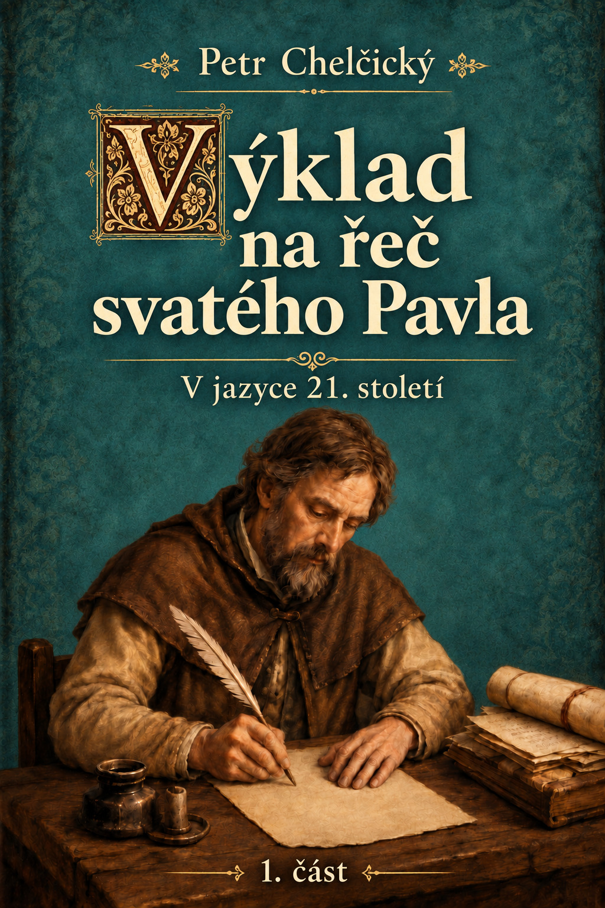

Úvod
Co znamená opravdu následovat Krista? Apoštol Pavel vybízí: „Pociťujte na sobě totéž, co Kristus Ježíš.“ Tato slova nejsou jen výzvou k rozjímání nad Kristovým životem, ale k osobní účasti na jeho cestě.
Text ukazuje Ježíše jako toho, kdo dobrovolně přijal ponížení, námahu, bolest i smrt – a zanechal tak stopu, po níž mají kráčet i jeho následovníci. Víra se zde nemá přenášet na druhé, jako by za člověka mohl někdo jiný nést jeho zápas. Následovat Krista znamená nést svůj díl námahy, odříkat se zlých návyků, krotit pýchu, hněv, závist i žádosti těla a učit se pokoře, tichosti a lásce.
Výklad na řeč svatého Pavla může dnešnímu čtenáři znít přísně, ale jeho přísnost není samoúčelná. Vede člověka od vnější zbožnosti k vnitřní pravdivosti – od slov k životu, od obdivu ke Kristu k účasti na jeho cestě.
Modernizované znění chce tuto naléhavou duchovní řeč přiblížit současnému čtenáři. Před námi tak nestojí jen dávný text, ale živá otázka: chceme Krista pouze vyznávat, nebo také nést na sobě to, co nesl on?